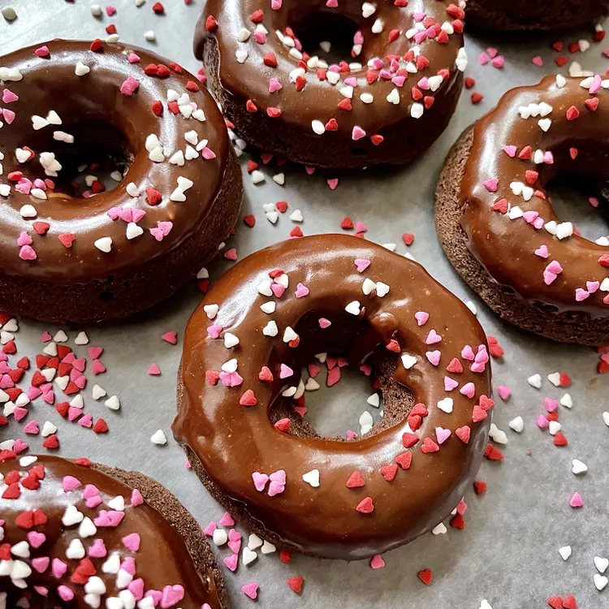

Back to Recipes

Description
Yummy glazed chocolate donuts without frying!
You can also sprinkle these with toppings after dipping into the glaze.
Ingredients
- cooking spray
- 2 cups all-purpose flour
- ¾ cup white sugar
- ½ cup unsweetened cocoa powder
- 1 teaspoon baking powder
- 1 teaspoon baking soda
- 1 teaspoon salt
- ¾ cup milk
- 2 tablespoons milk
- 2 egg
- 2 tablespoons butter, melted
- 1 teaspoon vanilla extract
-
Glaze:
- ¼ cup butter
- 1 tablespoon heavy cream
- 1 tablespoon milk
- 2 teaspoons corn syrup
- 1 teaspoon vanilla extract
- 1 ounce bittersweet chocolate, chopped
- 1 ounce semisweet chocolate chips
- 1 ¼ cups powdered sugar
Steps
- Preheat the oven to 325 degrees F (165 degrees C). Spray 11 donut cups with cooking spray.
- Mix flour, sugar, cocoa powder, baking powder, baking soda, and salt together in a bowl. Beat in 3/4 cup plus 2 tablespoons milk, eggs, 2 tablespoons melted butter, and vanilla extract using an electric mixer. Beat until well blended.
- Pour batter into a zip-top bag and cut off 1 corner. Fill each donut cup about 3/4 full using the zip-top bag.
- Bake in the preheated oven until a toothpick inserted into a donut comes out clean, about 10 minutes. Allow to cool slightly, 5 to 10 minutes.
- While donuts cool, combine 1/4 cup butter, cream, milk, corn syrup, and vanilla extract in a small saucepan over medium-low heat until butter is completely melted, 2 to 3 minutes. Reduce heat to low and stir in bittersweet and semisweet chocolate until melted, 2 to 3 minutes more. Remove from heat and whisk in powdered sugar to combine. Dip each cooled donut into the glaze and let cool and set, about 15 minutes.